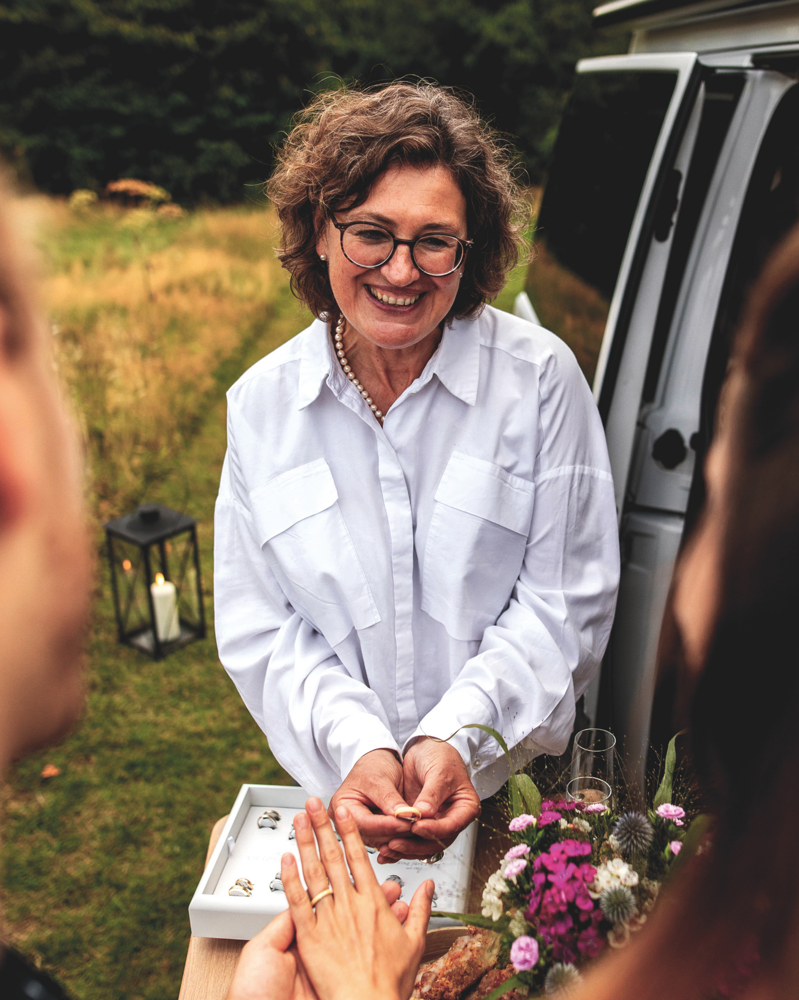
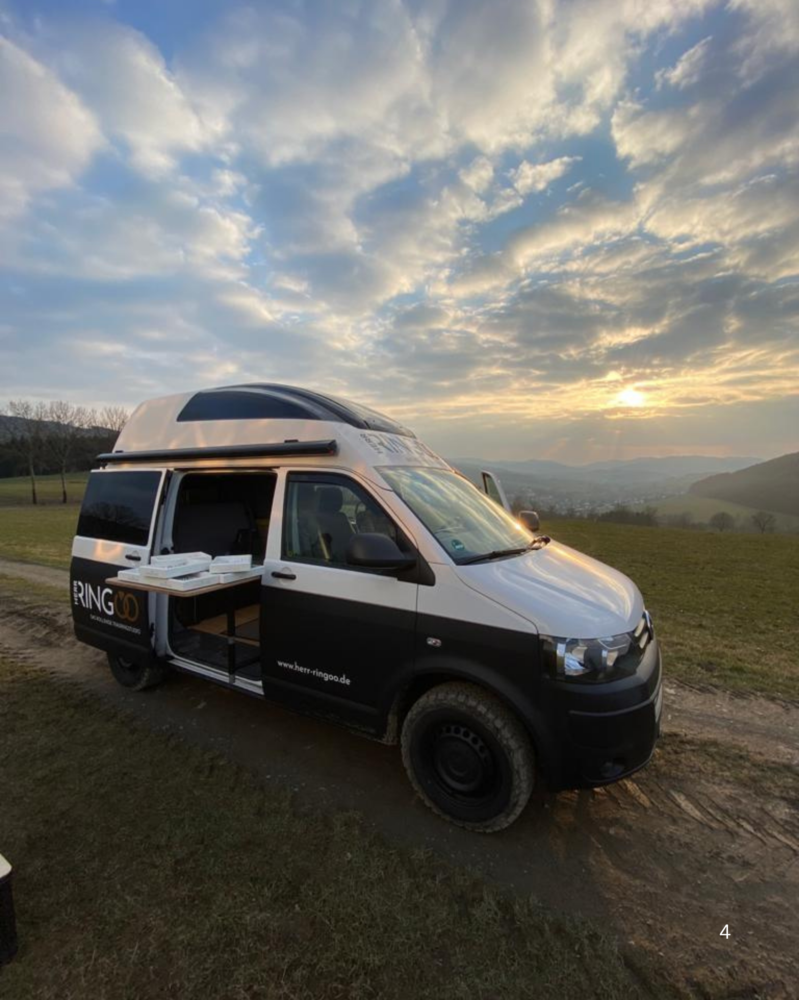
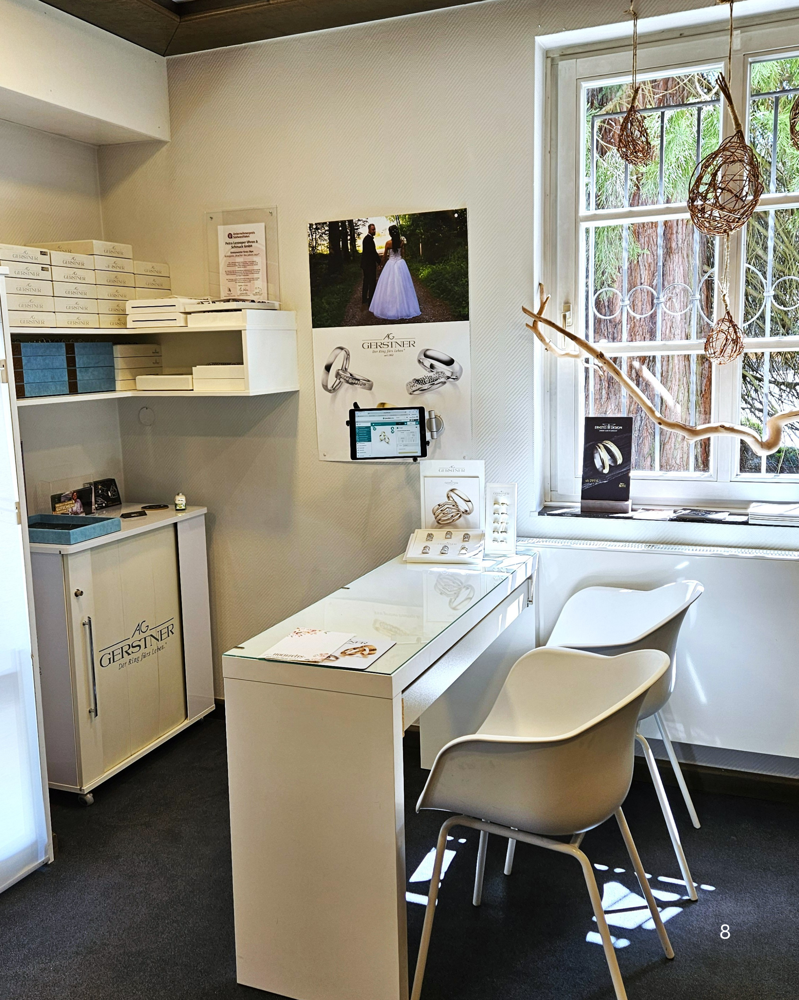
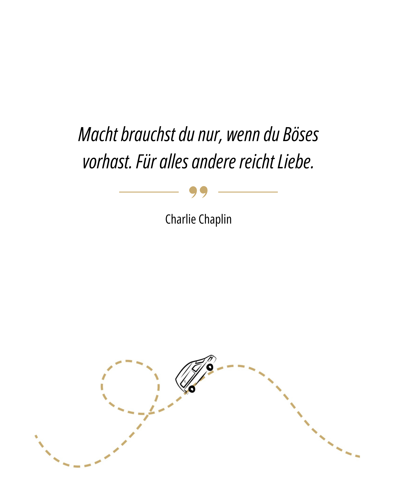

Schritt für Schritt
Planer: einen Post zusammenstellen
Diese Seite führt in fünf Schritten von einer Idee zu einem fertigen, geprüften Post – auch ohne viel Erfahrung mit digitalen Werkzeugen. Jeder Schritt erklärt kurz, worauf es ankommt, und verlinkt auf das passende Material.
Quelle: ideensammlung/, kategorien/README.md, medien/README.md, captions/, planung/Schritt 1 · Idee auswählen
Ausgangspunkt ist immer eine Idee aus der Ideensammlung. Wählt eine noch offene Idee aus oder tragt eine neue ein.
| Datum | Idee | Kategorie |
|---|---|---|
| 2026-07-04 | Making-of Video „Wie ein Ehering entsteht" | werkstatt |
| 2026-07-04 | Vorstellung eines Standorts/Stopps der aktuellen Tour | unterwegs |
Noch keine passende Idee? Inspiration nach Kategorie
Werkstatt & Prozess
Ein Ring entsteht Schritt für Schritt – z. B. ein kurzes Making-of.
Unterwegs / Standorte
„Nächster Stopp: …" – wo hält Herr RINGOO als Nächstes?
Kundengeschichten
Ein Paar erzählt, wie es zu seinen Ringen kam (mit Einverständnis).
Ring im Detail
Nahaufnahme eines Rings mit kurzer Beschreibung von Material/Design.
Team & Menschen dahinter
Kurzvorstellung eines Teammitglieds, Werkstattalltag.
Trauring-Wissen
Eine häufig gestellte Frage kurz und verständlich beantworten.
Alle Kategorien im Detail: Ideensammlung.
Schritt 2 · Bild auswählen
Zu jeder Idee gehört ein passendes Bild oder Video. Am einfachsten: ein vorhandenes, bereits fertiges Motiv aus dem Material-Pool wählen – oder ein neues Foto passend zur Idee machen.
Gut zu wissen: Bildformate auf Instagram
| Format | Seitenverhältnis | Empfohlene Größe | Einsatz |
|---|---|---|---|
| Quadratisch | 1:1 | 1080 × 1080 px | klassischer Feed-Post |
| Hochformat | 4:5 | 1080 × 1350 px | nimmt mehr Platz im Feed ein, oft die beste Wahl |
| Story/Reel | 9:16 | 1080 × 1920 px | Story, Reel, Vollbild auf dem Handy |
Was macht ein gutes Bild aus?
- Ein klarer Blickfang (Ring, Van oder Person steht im Mittelpunkt, kein wirrer Hintergrund)
- Gutes, natürliches Licht statt dunkler oder überstrahlter Aufnahmen
- Passt farblich/stimmungsmäßig zu Herr RINGOO (siehe Markenkommunikation)
- Wirkt authentisch – ein echter Moment statt einer steifen Pose
Beispiele aus dem Material-Pool

kundengeschichten / produkt

unterwegs

werkstatt / wissen

community / wissen
Mehr Auswahl und volle Auflösung: Ressourcen.
Schritt 3 · Caption schreiben
Die Caption ist der Text zum Bild. Eine gute Caption hat drei Teile: einen kurzen Hook, der Lust aufs Weiterlesen macht, einen kurzen Haupttext mit der eigentlichen Geschichte oder Information, und eine Call-to-Action am Ende. Der Ton richtet sich nach dem Markenkommunikation-Guide: herzlich, per Du/Ihr, mit Augenzwinkern.
Hook-Bausteine zum Einstieg
- „So entsteht ein Ehering, der ein Leben lang hält. 💍"Werkstatt & Prozess
- „Nächster Stopp: [Ort]. Wir freuen uns auf euch!"Unterwegs / Standorte
- „Ganz nah dran: [Ringmodell] im Detail."Ring im Detail
Call-to-Action zum Abschluss
- „Termin vereinbaren? Link in der Bio 👆"
- „Verratet uns: Was ist euch bei eurem Ehering am wichtigsten?"
- „Speichert diesen Post, falls ihr gerade selbst auf der Suche seid."
Weitere Textbausteine entstehen laufend im Team-Repository und orientieren sich am Markenkommunikation-Guide.
Schritt 4 · Hashtags
Hashtags helfen neuen Leuten, den Post zu finden. Faustregel: 5–15 passende Hashtags statt möglichst vieler – eine Mischung aus Marken-, Kategorie- und Regional-Hashtags funktioniert am besten. Direkt in der Caption oder im ersten Kommentar platzieren.
Marke (bei fast jedem Post)
Je nach Kategorie
Lokal / Region
Schritt 5 · Prüfen und vorschlagen
Vor dem Vorschlagen einmal kurz gegenchecken:
- Rechtschreibung und Zeichensetzung geprüft
- Ton passt zum Markenkommunikation-Guide (Du/Ihr, keine leeren Floskeln)
- Bild, Text und Kategorie erzählen dieselbe Geschichte
- Bei Kundengeschichten: Einverständnis der abgebildeten Personen liegt vor
- Hashtags sind passend und nicht zu viele
- Ein realistischer Zeitraum für die Veröffentlichung ist vorgeschlagen
Danach wird der Post im Team abgestimmt und bekommt einen Platz im Content-Kalender – von „💡 Idee" über „✅ Bereit" bis „📤 Veröffentlicht". Eine interaktive Freigabefunktion für Herr RINGOO ist noch nicht Teil dieser Seite, kann aber auf dieser Struktur aufbauen.